A complete, production-shaped web scraping API and dashboard — one durable job queue, a real headless browser path, SSRF-safe egress, tenant isolation, and artifact storage.
Agenda
Product → architecture → every technology choice, point by point → live artifacts → quality and honest limits.
Why scraping at scale is hard, and the product that answers it.
Control plane, workers, data stores and the request lifecycle.
Python 3.12 + uv; TypeScript + npm. Why each was chosen.
FastAPI, SQLAlchemy, Celery, Selenium, boto3, security and ops.
Next.js 16, React 19, Tailwind 4, the BFF pattern and tooling.
Dashboard screenshots, a real job, screenshot, HTML and JSON.
Docker topology, cross-platform runners, test and lint gates.
Exactly what was proven locally, and what needs external services.
The deck follows the order of a code review: what it does, how it is wired, which library does what, then the evidence.
The problem
A single script works once. A platform has to survive concurrency, hostile pages, tenants, and audits.
Client-side rendering, lazy images, cookie walls and bot checks mean raw HTML is often empty. Chrome must be pooled, timeboxed and reaped.
A 60-second browser run would block an HTTP worker. Work must be queued durably, retried, cancellable, and observable from outside the request.
Without validation, http://169.254.169.254 or localhost turns a scraper into an internal network scanner. DNS rebinding defeats naive checks.
Every job, key, artifact, schedule and webhook must be scoped to an organisation, with roles, quotas, rate limits and an audit trail.
Implicit requirements: artifact storage with hashes and expiry, idempotent submissions, structured logs with correlation IDs, metrics an operator can alert on, and a UI that does not leak tokens.
Implicit constraints: the API process must never launch Chrome; workers may crash mid-job; storage may be MinIO, S3 or a mock; the same compose file should run on Linux, macOS and Windows.
The hard part is never the HTTP fetch — it is isolation, durability, safety and accounting around it.
The solution
ScrapeFlow accepts a job over HTTP, returns 202 Accepted immediately, and does the slow work in isolated workers.
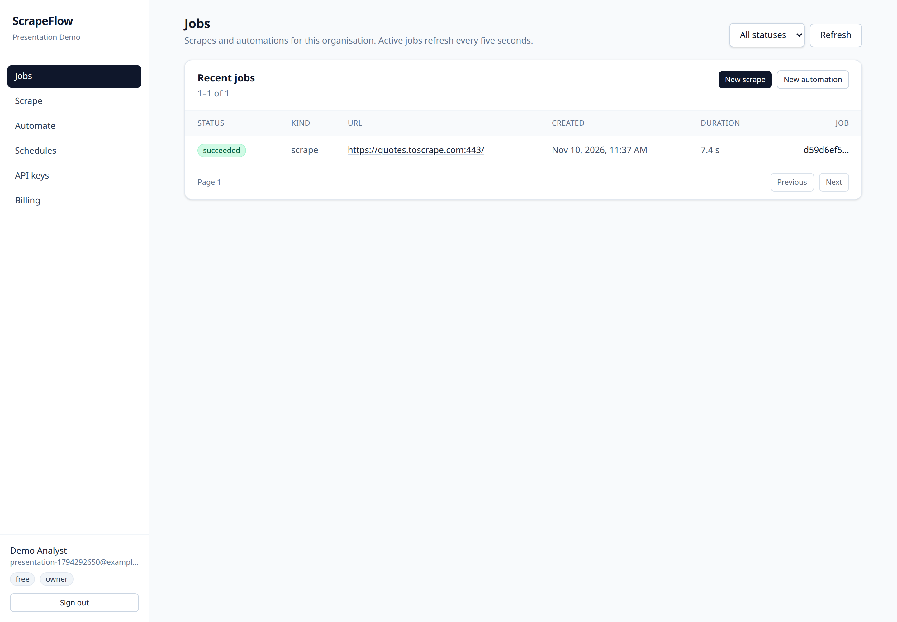
Capability map
Each box is implemented in the repository and mapped to a module, not a roadmap promise.
HTTP fetch or real browser. Named selectors, extraction limits, redirects, timeout, idempotency key.
Typed actions with limits per plan, browser-only execution, optional screenshots per step.
Queued → running → terminal states, events, cancellation, retries, hard timeout + reaper.
S3-compatible upload, SHA-256, content type, retention by plan, presigned download URLs.
Cron validation via croniter, per-run history, Celery Beat dispatch, manual run endpoint.
HMAC signatures, encrypted endpoint secrets, outbox delivery and retry tracking.
Organisations, memberships, roles, scoped API keys, credit ledger, concurrency limits.
JSON logs with request/job IDs, Prometheus metrics, Sentry, /health and /ready.
Every capability on this slide maps to a module path, so a claim can be checked against code in one step.
Architecture
Why split: an HTTP request can return in milliseconds while a 60-second browser job runs elsewhere. API restarts never kill running scrapes.
Why proxy-only egress: DNS is resolved and checked at connect time, then the validated IP is pinned — closing the rebinding window.
Production: the same topology sits behind Caddy 2.8 with automatic TLS in deploy/compose.prod.yml.
End-to-end flow
The real job used throughout this deck: POST /v1/scrape → quotes.toscrape.com, render_js=true, screenshot + HTML.
JWT bearer or hashed API key → membership → role → required scope (scrape:write). Audit log written.
Pydantic v2 schema: absolute http(s) URL, selector map, timeout bounds, extraction limits, plan caps.
URL validated against the SSRF policy; credits reserved in the usage ledger; rate-limit bucket consumed atomically in Redis.
Job row committed as queued; Celery task published; API returns 202 with the job id and a dedup flag.
httpx fetch or Selenium Grid browser run through the validating egress proxy. Hard timeout is enforced.
parsel applies CSS/XPath selectors, page text, links and meta limits; the payload is normalised to JSON.
screenshot.png, page.html and result.json uploaded through boto3, hashed with SHA-256 and given a retention expiry.
Job marked succeeded with duration; events appended; webhook delivery queued in the outbox.
The dashboard polls /v1/jobs/{id} every 5 s; artifacts download through short-lived presigned URLs.
$ curl -X POST /v1/scrape ... 202 {"job":{"status":"queued", ...}} poll 1 succeeded duration_ms: 7406 result.title "Quotes to Scrape" artifacts result.json · page.html · screenshot.png
The API only validates, records and enqueues. Everything slow and failure-prone happens outside the request.
Stack at a glance
| Layer | Language | Technology | Version | Role |
|---|---|---|---|---|
| API control plane | Python | FastAPI · Starlette · Uvicorn | 0.162 · 1.10 · 0.32 | ASGI HTTP API, DI, OpenAPI, async jobs |
| Validation & config | Python | Pydantic v2 · pydantic-settings | 2.9+ · 2.5+ | Typed request/response models, env settings |
| Persistence | SQL | SQLAlchemy 2 async · asyncpg · Alembic · PostgreSQL | 2.0 · 0.30 · 1.14 · 16 | ORM, async driver, migrations, relational truth |
| Job queue | Python | Celery[redis] · redis-py · croniter | 5.4 · 5.2 · 3.0 | Durable workers, broker, cron schedules |
| Scraping engine | Python | httpx · parsel · Selenium | 0.27 · 1.9 · 4.25 | HTTP fetch, CSS/XPath, real browser |
| Artifacts | Python | boto3 · S3 API (MinIO / s3mock) | 1.35+ | Uploads, SHA-256, presigned downloads |
| Security | Python | PyJWT · argon2-cffi · cryptography | 2.9 · 23.1 · 50 | Tokens, password hashing, secret encryption |
| Observability | Python | structlog · prometheus-client · sentry-sdk | 24.4 · 0.20 · 2.14 | JSON logs, metrics, error reporting |
| Dashboard | TypeScript | Next.js · React · Tailwind CSS | 16.4.5 · 19.3.1 · 4.3.4 | App Router UI, BFF, styling |
| Frontend tooling | TypeScript / JS | ESLint · Vitest · Playwright · Vite | 9.39 · 5.1 · 1.65 · 8.3 | Lint, unit tests, E2E, test runner core |
| Runtime & infra | YAML / HCL-free | Docker Compose v2 · Caddy · Bash · PowerShell | v2 · 2.8 · 3.2+ / 5.1+ | Local + prod topology, TLS, one-command runners |
One row per layer. If a library is not on this slide, it is not in the runtime dependency list.
Languages
Deliberate split: heavy I/O and scraping live in Python; the UI and BFF share one typed language.
Pinned to >=3.12,<3.13 in pyproject.toml.
Strict config, noEmit typecheck in CI.
Two application languages, one rule: typed at the boundary, tested at the edge.
Package managers
Both lock the full dependency graph. Neither relies on a globally installed toolchain.
# everyday commands uv sync # install exactly the lockfile uv run pytest -q # run inside the project env uv run ruff check apps packages tests uv add "httpx" # update pyproject + lock
# scripts in apps/web/package.json npm ci npm run lint npm run typecheck npm test # vitest run npm run build # next build
Lockfiles are committed. A fresh clone resolves to the exact versions that passed the gates.
Backend libraries
Declared in scrapeflow/pyproject.toml; every group below is exercised by the test suite.
fastapi
starlette
uvicorn[standard]
Routing, DI, ASGI serving, request lifecycle.
pydantic>=2.9
pydantic-settings
email-validator
Request/response models, env config, email types.
sqlalchemy[asyncio]
asyncpg
alembic
ORM, async PostgreSQL driver, versioned migrations.
celery[redis]
redis>=5.2
croniter
Workers, broker/client, cron expression evaluation.
httpx
parsel
selenium
HTTP client, CSS/XPath engine, WebDriver protocol.
boto3>=1.35
S3 uploads, metadata, presigned URL generation.
PyJWT
argon2-cffi
cryptography
Signed tokens, password hashing, encrypted secrets.
structlog
prometheus-client
sentry-sdk[fastapi]
Structured logs, metrics registry, exception capture.
Billing: stripe>=11,<15 for checkout sessions, the customer portal and signed webhook events.
Test-only: pytest 9, pytest-asyncio, pytest-cov, respx, ruff, mypy, pip-audit, locust (e2e group).
Guardrail: pip-audit scans the resolved lock for known CVEs; mypy checks 94 source files.
Eight groups, one responsibility each — no library is present for decoration.
Backend · web layer
Four libraries with four distinct jobs. Each one is replaceable in theory and load-bearing in practice.
ASGI toolkit underneath FastAPI. Used directly for the RequestContextMiddleware that accepts a safe X-Request-ID, binds it to logs, and rejects unsafe values.
Runs the ASGI app on port 8000 inside the container. [standard] adds uvloop and httptools for throughput; health probes hit /health and /ready.
Rust-backed validation and serialisation. pydantic-settings loads .env into a typed Settings object at startup, so a bad secret fails fast.
# apps/api/routers/scrape.py — shape (simplified) @router.post( "", response_model=JobAccepted, status_code=status.HTTP_202_ACCEPTED, ) async def create_scrape( payload: ScrapeRequest, principal: Principal = Depends(require_scope("scrape:write")), session: AsyncSession = Depends(get_session), idempotency_key: str | None = Header(None, alias="Idempotency-Key"), ) -> JobAccepted: # validate → quota → persist queued job → enqueue job = await dispatch.create_job(...) return JobAccepted(job=job, deduplicated=False)
Backend · persistence
PostgreSQL is the source of truth. Redis is a cache and a queue — never the record of what happened.
AsyncSession per request, declarative models, typed select(). Relationships and constraints live in the model layer, not in ad-hoc SQL.
The actual PostgreSQL driver. Binary protocol, prepared statements, no psycopg overhead. URL form: postgresql+asyncpg://….
Five versioned migrations run by the migrate compose service before the API starts. alembic current / heads are documented runbook commands.
Celery tasks create and destroy an event loop per job. Reusing a pooled asyncpg connection across loops caused Future attached to a different loop; workers now use NullPool and a regression test runs the reaper across two loops.
PostgreSQL is the record of what happened. Redis may lose data without rewriting history.
Backend · async work
The API answers in milliseconds; workers do the slow, failure-prone part with retries and a hard deadline.
$ docker compose ps --format '{{.Service}} {{.Status}}' api Up (healthy) worker Up beat Up redis Up (healthy) postgres Up (healthy) # Celery Beat schedules due work every minute; # the reaper closes orphaned browser sessions and hard-times-out jobs. [tasks] jobs · reaper · reconcile · retention · schedules · webhooks
Backend · scraping engine
Two execution paths behind one contract, both forced through the same validating egress proxy.
$ jq '.selectors' result.json { "author": "Albert Einstein", "first_quote": "“The world as we have created it is a process of our thinking. It cannot be changed without changing our thinking.”" }
Two engines, one contract: the caller gets the same result shape whether or not JavaScript was required.
Backend · object storage
Screenshots and HTML are too large for a database row and too useful to lose. They live in object storage, addressed by row metadata.
Single S3 client configured by ARTIFACTS_ENDPOINT, bucket and credentials. Works against MinIO, AWS S3, or adobe/s3mock locally.
Worker uploads screenshot.png, page.html and result.json, computes SHA-256, then inserts an artifacts row with content type, size and expires_at.
GET /v1/artifacts/{id}/download authorises the caller, then redirects to a short-lived presigned URL. The browser never sees storage credentials.
Plan-dependent: 1 day on Free, 7 Starter, 30 Pro, 90 Business. The retention task deletes expired objects and rows.
| Kind | File | Size | SHA-256 (prefix) |
|---|---|---|---|
| result | result.json | 2.1 KB | 27906a08a7cf… |
| html | page.html | 11 KB | 47c8812e633f… |
| screenshot | screenshot.png | 84 KB | 54ebbeb9b150… |
Local note: the pinned MinIO tag returned 401 from its registry in this environment, so the verified run used adobe/s3mock. The S3 code path and presigned redirects are identical; the official MinIO image/lifecycle remains unverified.
The database stores metadata, object storage stores bytes, and the API stores neither.
Backend · security
Short-lived access tokens signed HS256; claims carry user, org and role. Refresh tokens rotate and are stored hashed.
Argon2id hashing with per-password salt. No plaintext, no reversible storage, constant-time verification.
Keys are shown once. Only a hash with a server-side pepper is stored, so a database leak alone cannot replay them.
Webhook signing secrets and proxy credentials are encrypted with Fernet before they reach PostgreSQL.
PII and logging: Sentry initialises with send_default_pii=False; structured logs carry identifiers, not secrets. /metrics can be disabled or protected with METRICS_TOKEN.
Compromise one layer and the next still holds: hashed credentials, scoped tokens, validated egress.
Backend · commercial layer
Isolation is structural: every query is scoped by organisation, and every job is priced before it runs.
organizations own users through memberships, and own jobs, keys, schedules, webhooks, artifacts and ledger rows.
Plans are frozen dataclasses in packages/core/plans.py — not editable database rows. A billing change is a reviewed code change with tests.
base 1 · browser +1 · screenshot +1 · proxy 2 · each extra page +1 · each started 10 automation steps +1.
Reserve → settle → release. A failed job does not silently consume credits; balances are reconstructable from rows.
| Plan | Credits / mo | Concurrency | Steps | Pages | Retention |
|---|---|---|---|---|---|
| Free | 100 | 1 | 10 | 5 | 1 day |
| Starter | 5,000 | 3 | 50 | 25 | 7 days |
| Pro | 50,000 | 10 | 100 | 100 | 30 days |
| Business | 250,000 | 25 | 200 | 500 | 90 days |
The integration code and webhook idempotency are implemented and unit-tested. Live Stripe checkout was not executed — no API keys or test account were available. It is listed as an unverified external path, not as working revenue.
Atomic Redis token bucket with Lua: capacity, refill rate and cost are arguments, and the script returns allowed / remaining / retry-after / reset. Response headers make throttling visible to clients.
Pricing lives in code, usage lives in rows, and limits are enforced before work starts.
Backend · observability
Phase 9 added correlation, metrics and error reporting; the evidence below is from the running stack, not a mock.
$ curl -s 127.0.0.1:8000/metrics | grep '^scrapeflow_' # method label trimmed to fit the slide scrapeflow_http_requests_total{route="/health",status="200"} 82.0 scrapeflow_http_requests_total{route="/v1/scrape",status="202"} 1.0 scrapeflow_http_requests_total{route="/v1/jobs/{job_id}",status="200"} 3.0 scrapeflow_http_requests_total{route="/v1/artifacts/{id}/download",status="307"} 5.0 $ curl -s 127.0.0.1:8000/ready {"status":"ready","checks":{"postgres":{"status":"ok"},"redis":{"status":"ok"}}}
/health is liveness (process up). /ready checks PostgreSQL and Redis and returns 503 when either fails — that is what Compose and Caddy should gate on.
Prometheus scrape config, alert rules and a Grafana dashboard are committed and configuration-validated. Prometheus/Grafana themselves were not started in this environment.
A Locust profile exists and its shape is unit-tested, but Locust is not installed here. No throughput number is claimed; the 3 skipped tests record that gap.
If a job cannot be explained from logs, metrics and events, it is not operable.
Frontend libraries
A deliberately small dependency surface: three runtime packages, and everything else is tooling.
App Router, server route handlers for the BFF, file-based pages, production build with next build.
Client components for interactive forms and polling; server components for page shells. react-dom pinned to the same version.
Strict checking via next typegen && tsc --noEmit. API types live in lib/types.ts.
PostCSS plugin, utility classes in components, no runtime CSS-in-JS. Design tokens are Tailwind's palette plus a small set of shared primitives.
| ESLint | 9.39.5 | flat config + eslint-config-next |
| Vitest | 5.1.0 | unit tests for pure UI logic |
| Vite | 8.3.6 | transform engine behind Vitest |
| Playwright | 1.65.0 | browser E2E + PDF rendering |
| TypeScript | 5.9.3 | typecheck |
| PostCSS plugin | 4.3.4 | Tailwind pipeline |
No state library, no fetch wrapper library, no component kit. Auth state is a React context; HTTP is a small typed request() helper; UI primitives are local.
Three runtime packages. Every other name on this slide is a build-time tool.
Frontend · architecture
One origin in the browser solves CORS, cookie policy and token exposure at the same time.
| /api/auth/signup | creates org + owner, sets refresh cookie |
| /api/auth/login | credentials → access token + cookie |
| /api/auth/refresh | rotates refresh token, returns access token |
| /api/auth/logout | revokes and clears the cookie |
| /api/proxy/[...path] | authorised pass-through to FastAPI |
// conceptual flow
Browser ──fetch──▶ Next.js /api/proxy/*
│ attaches access token
▼
FastAPI /v1/*
│ JSON + status
▼
Browser ◀── same-origin response
Trade-off: every API call takes one extra hop. In exchange, the app has no CORS configuration, no token in web storage, and a single auditable boundary.
The browser never holds a long-lived credential — and never needs a CORS configuration.
Frontend · UI system
No design-system dependency. Nine primitives and four editors cover every screen in the product.
Inline errors from ApiError, optimistic disabled states while submitting, skeletons/spinners for polling pages, and empty states that explain the next action.
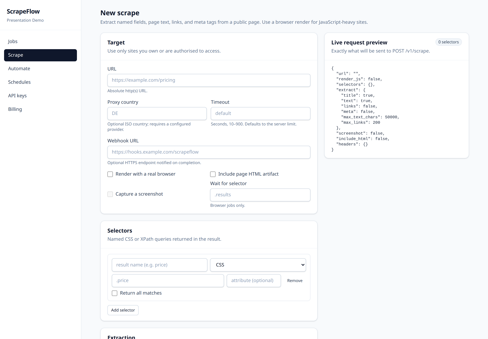
Tailwind 4 utility classes, no CSS-in-JS runtime, consistent slate/indigo palette.
Labels bound to inputs, real buttons, visible focus states, semantic headings.
Frontend · quality tooling
Five gates, all runnable from apps/web with npm scripts. The same commands run in CI.
$ npm run lint ✔ eslint . no errors $ npm run typecheck ✔ next typegen && tsc --noEmit $ npm test ✔ 30 tests passed (3 files) $ npm run build ✔ compiled successfully ✔ route table generated $ npm run e2e ✔ 5 passed · 2 skipped (Chromium)
Flat config with eslint-config-next; catches React hook mistakes and Next-specific pitfalls.
Pure-logic tests for formatting, safe downloads and automation payload building — fast, no browser needed.
The journey spec drives signup → scrape → artifacts in Chromium. The two skips are environment-gated browser paths.
Production compile catches server/client boundary errors that typecheck alone cannot. The web image runs the built output.
Fast unit tests for logic, one real browser journey for the wiring, a production build for the boundary.
Live dashboard · onboarding
Captured from the running stack at 127.0.0.1:3000, against real PostgreSQL and Redis.
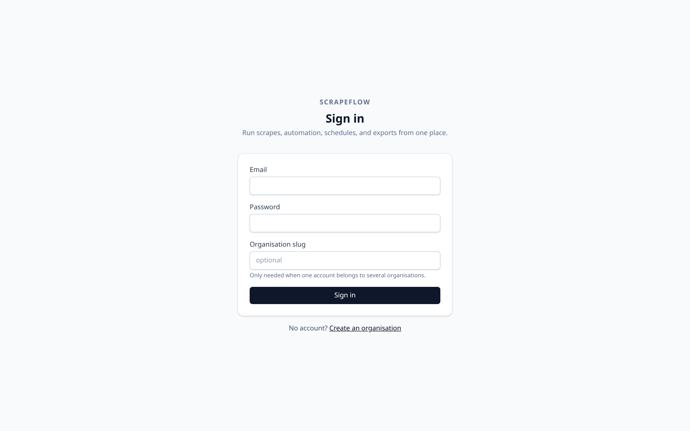
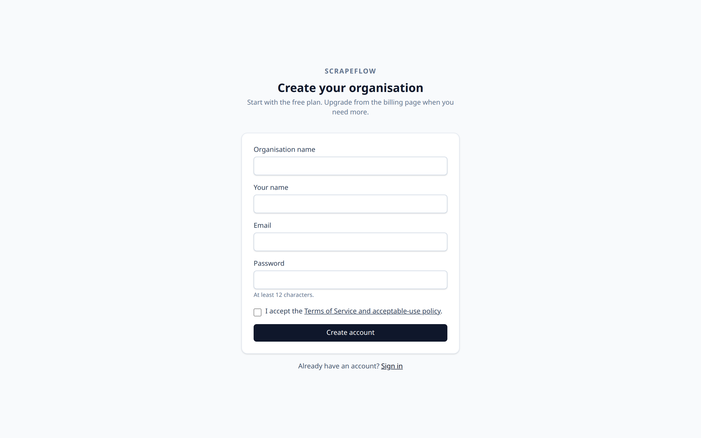
Live dashboard · daily use
One real succeeded job is visible: quotes.toscrape.com, 7.4 seconds, screenshot and HTML requested.
Status badge, kind, URL, created time, duration and short job id. Filters by status, pagination, and quick actions to start a new scrape or automation.
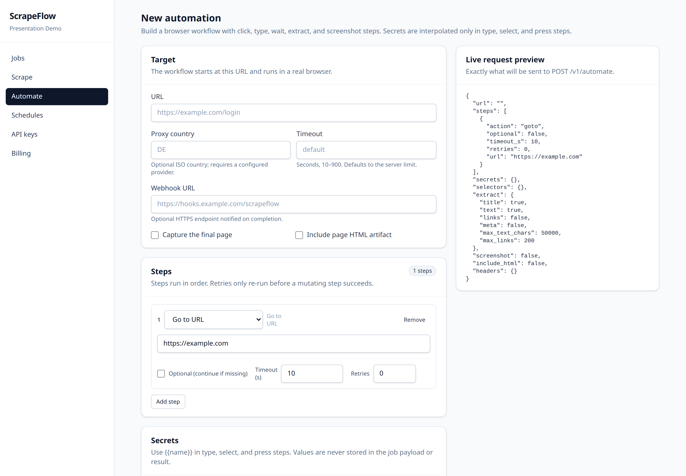
The scrape form is declarative: URL, selectors, extraction options, screenshot/HTML flags, proxy country, timeout and webhook — with a live JSON preview of the exact request body.
Live dashboard · operations
Four more screens, captured from the same session. Each is wired to real endpoints, not static mock data.
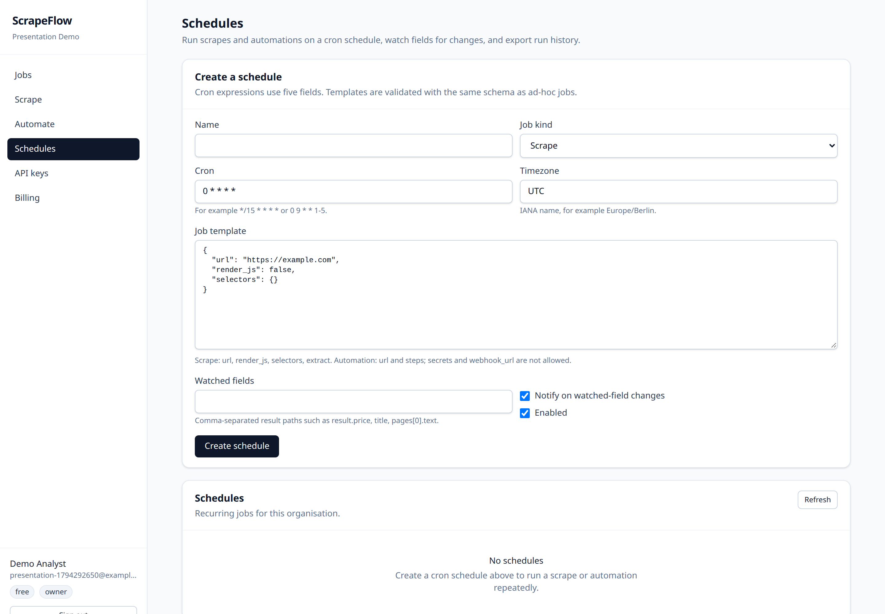
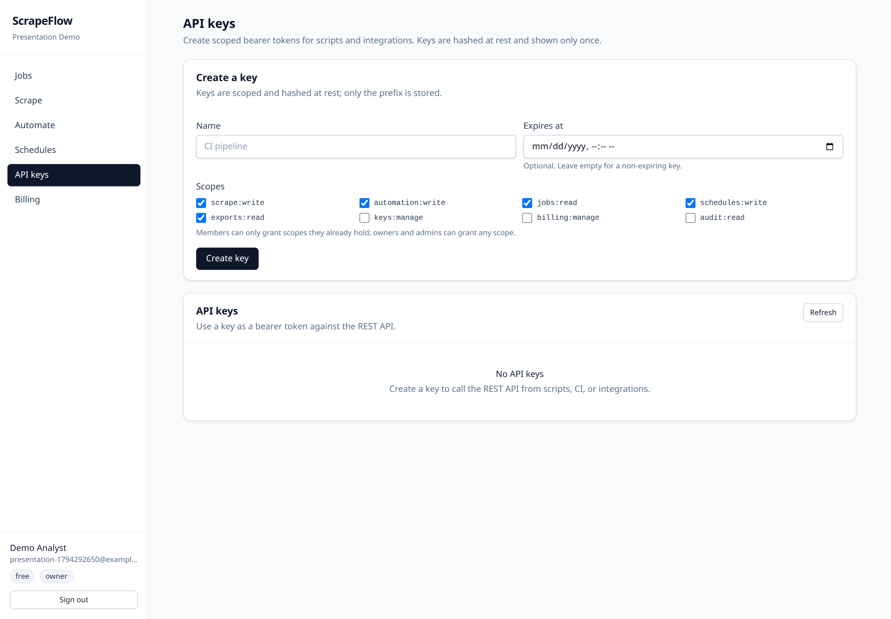
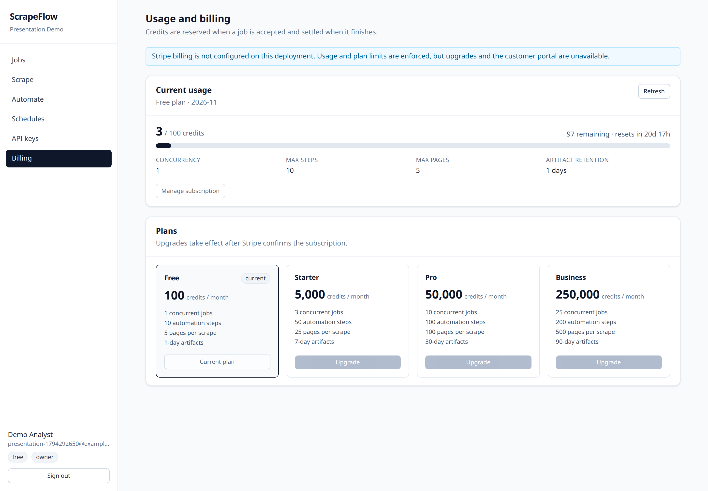
Schedules, keys and billing are first-class screens, not settings hidden in a menu.
Live artifact · job detail
Job d59d6ef5-1868-4e10-8999-96e762cfdc6e — queued and succeeded in 7.4 s with attempt 1 of 2.
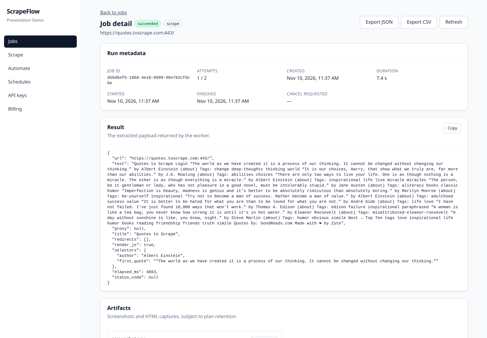
# page.html (excerpt, real artifact · 11 KB) <html lang="en"><head> <meta charset="UTF-8"> <title>Quotes to Scrape</title> </head><body> <div class="quote" itemscope> <span class="text">“The world as we have created it is a process of our thinking…”</span> <small class="author">Albert Einstein</small>
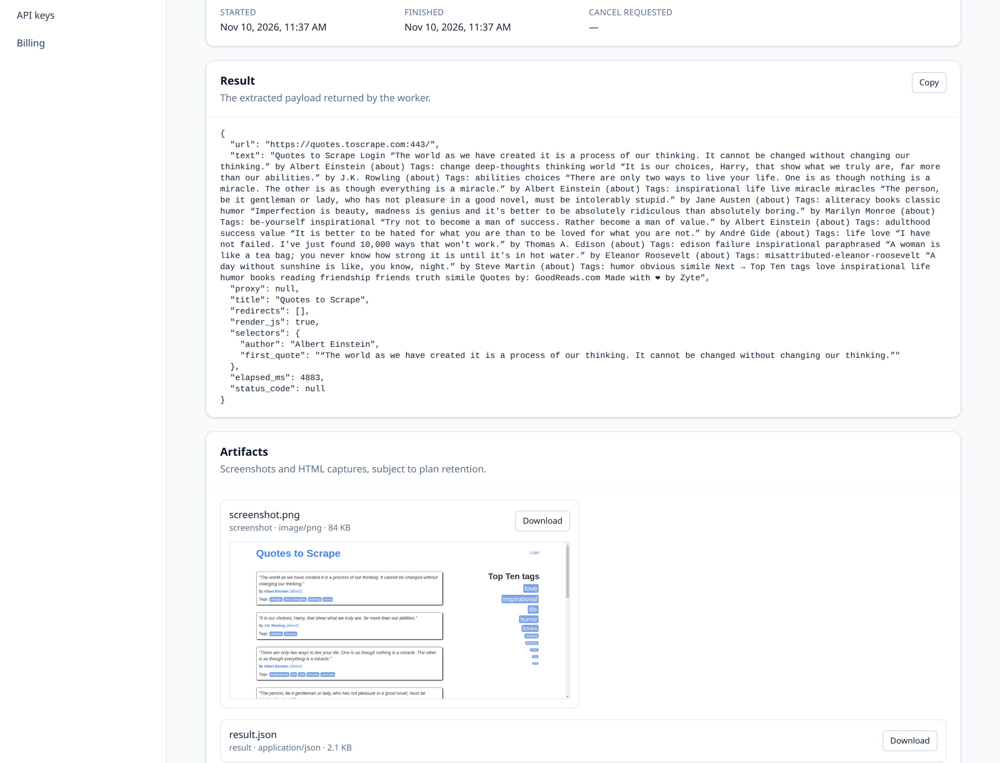
Quotes to Scrape
Albert Einstein
3 files · screenshot, HTML, JSON
Live artifact · raw output
The screenshot is the page as Chrome rendered it after JavaScript; the JSON is the extracted payload. Both were downloaded from object storage.
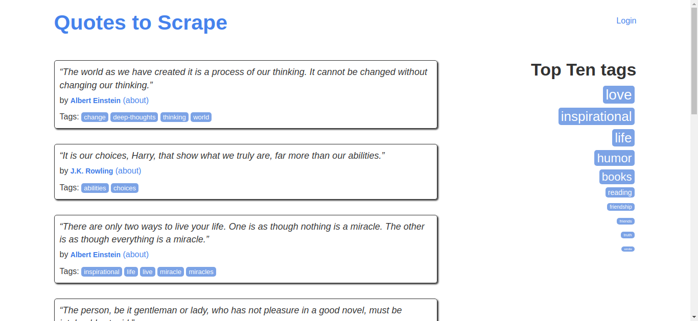
# result.json (excerpt, real artifact) { "elapsed_ms": 2682, "proxy": null, "redirects": [], "render_js": true, "selectors": { "author": "Albert Einstein", "first_quote": "“The world as we have created it is a process of our thinking. It cannot be changed without changing our thinking.”" }, "status_code": null, "text": "Quotes to Scrape Login “The world as we have created it is a process of our thinking…”" }
API surface
The OpenAPI schema is not hand-maintained: it is built from FastAPI routes and Pydantic models, then served at /docs.
| Group | Endpoints |
|---|---|
| System | GET /health · GET /ready |
| Auth | POST /v1/auth/signup · login · refresh · logout · GET /v1/auth/me |
| Scrape | POST /v1/scrape |
| Automation | POST /v1/automate |
| Jobs | GET /v1/jobs · GET /v1/jobs/{id} · cancel · events · export |
| Artifacts | GET /v1/jobs/{id}/artifacts · GET /v1/artifacts/{id}/download |
| Keys | GET/POST /v1/keys · PATCH/DELETE /v1/keys/{id} |
| Schedules | CRUD · run · runs · history · export |
| Webhooks | CRUD · deliveries · rotate-secret |
| Billing | checkout · portal · plans · usage · webhook |
Async by design: creation endpoints return 202 and a job id. Clients poll or wait for a webhook — the HTTP connection is never held open for a browser run.
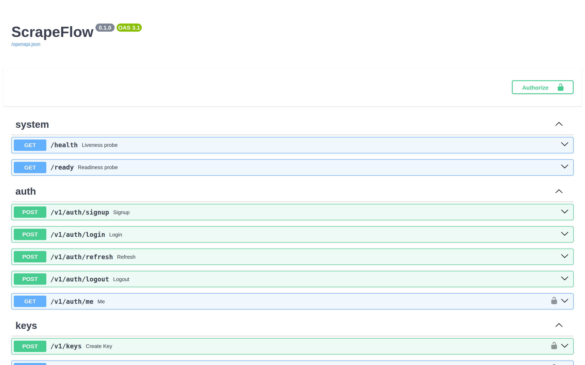
The schema is generated from the implementation, so documentation cannot silently drift.
Infrastructure · local
One command builds and starts everything, waits for readiness, and prints the URLs.
| Service | Image | Port | Responsibility |
|---|---|---|---|
| web | apps/web Dockerfile | 3000 | Next.js dashboard and BFF, production build |
| api | apps/api Dockerfile | 8000 | FastAPI control plane, OpenAPI, metrics |
| worker | same backend image | 9101 | Celery prefork workers, scrape + automation |
| beat | same backend image | — | Celery Beat scheduler, schedule file on tmpfs |
| migrate | same backend image | — | one-shot alembic upgrade head, exits 0 |
| egress-proxy | same backend image | 8888 | validating HTTP/CONNECT proxy with IP pinning |
| postgres | postgres:16-alpine | 5432 | durable relational state, named volume |
| redis | redis:7-alpine | 6379 | broker, token buckets, idempotency |
| minio | quay.io/minio/minio | 9000/9001 | S3-compatible artifact store (s3mock fallback) |
| minio-init | python helper | — | creates the bucket, exits 0 |
| selenium | standalone-chrome:4.25.0 | 4444 | headless Chrome pool for real browser runs |
pgdata · redisdata · miniodata
single app_net bridge; only 3000/8000/9000/4444 bound to host
pg_isready, redis-cli ping, api /ready, web /login
Eleven services, one network, three volumes. Reset is safe because all state is named.
Infrastructure · production
deploy/compose.prod.yml reuses the backend image, adds Caddy 2.8 and removes host-exposed dev ports.
Automatic HTTPS certificates, reverse proxy to web and api, HTTP→HTTPS redirect. Only 80/443 are published.
PostgreSQL, Redis and MinIO volumes persist across deploys. The runbook covers pg_dump/restore, volume backup and a tested rollback path.
SCRAPEFLOW_IMAGE selects the backend tag; migrate runs before API/worker start; rollback is a tag change plus a migration check.
Not started here: the production Caddy topology needs a real domain and DNS. It is committed and documented, but not verified live in this environment.
caddy # TLS + reverse proxy, ports 80/443 api # uvicorn, no host port web # next start, no host port worker # celery prefork beat # scheduler migrate # alembic upgrade head (one-shot) egress-proxy # validating forward proxy postgres # 16-alpine + pgdata redis # 7-alpine + redisdata minio # S3 store + miniodata minio-init # bucket bootstrap selenium # standalone-chrome
Production changes the edge, not the application: same images, Caddy in front, no dev ports.
Developer experience
Four entry points, identical subcommands. The macOS wrapper delegates to the shared Bash runner; Windows has a native PowerShell implementation.
| Entry point | Platform | Behaviour |
|---|---|---|
| scripts/run.sh | Linux | Shared implementation: start, logs, status, seed, fix-db-password, stop, reset |
| scripts/run-macos.sh | macOS | Checks Docker Desktop and Python, then execs the shared runner |
| scripts/run.ps1 | Windows | Native PowerShell 5.1+: creates .env and the S3-mock override without Bash, Python or curl |
| scripts/run.cmd | Windows CMD | Launcher that runs run.ps1 with -ExecutionPolicy Bypass |
PS> .\scripts\run.ps1 status NAME STATUS scrapeflow-api-1 Up (healthy) scrapeflow-worker-1 Up scrapeflow-web-1 Up (healthy) PS> .\scripts\run.ps1 fix-db-password ==> Starting PostgreSQL ALTER ROLE role scrapeflow now matches DATABASE_URL
Honest limit: native Windows PowerShell 5.1 + Docker Desktop and native macOS execution were not available on this host. They remain UNVERIFIED; the scripts target those environments and the docs say so.
The platform is a first-class target, not a footnote in the README.
Quality gates
Numbers below come from the final run recorded in docs/presentation/evidence/.
$ uv run ruff check apps packages tests All checks passed! $ uv run ruff format --check apps packages tests 137 files already formatted $ uv run mypy apps packages Success: no issues found in 94 source files $ uv run pytest -q --cov=apps --cov=packages Required test coverage of 70.0% reached. Total coverage: 83.08% 322 passed, 3 skipped in 95.21s
Every skip is documented with a reason. A green run without that context would be misleading.
Security · automated pentesting
An autonomous AI pentester runs on demand, on all three platforms, with a spend cap and a human triage step.
| Surface | Platform | What it does |
|---|---|---|
| .github/workflows/strix.yml | GitHub Actions | Manual scan with pinned strix-agent 1.7.0, severity gate, budget cap and report artifact |
| scripts/security-scan.sh | Linux | Source audit in a detached worktree, or a live scan of :8000 driven by OpenAPI |
| scripts/security-scan-macos.sh | macOS | Docker Desktop and daemon checks, then delegates to the shared script |
| scripts/security-scan.ps1 · .cmd | Windows | PowerShell 5.1 runner with the same worktree, OpenAPI and exit-code contract |
# source audit, or a live scan of the running API $ export STRIX_LLM=openrouter/z-ai/glm-5.3 $ export LLM_API_KEY=... $ cd scrapeflow && ./scripts/security-scan.sh live $ ./scripts/security-scan-macos.sh code PS> .\scripts\security-scan.ps1 live # exit codes: 0 clean, 1 fatal, 2 findings # reports: strix_runs/; CI uploads the same folder $ strix view # findings dashboard
Offense is a separate lane: same entry points as the stack, explicit budget, and no green claim until a real scan runs.
Scope discipline
A production claim is only as good as the environment it ran in. This slide is deliberately split.
Read this as: the application logic, security boundaries and integrations are implemented and tested locally. Anything that needs a paid or external service is clearly flagged — never presented as already working in production.
The left column is evidence. The right column is a to-do list that needs external services.
Next steps
The next milestone is not more features — it is proving the external paths and the capacity curve.
Queue the work so requests stay fast. Guard the boundary so user URLs cannot reach your network. Keep a receipt — artifacts, hashes, events and metrics — so every job can be explained later.